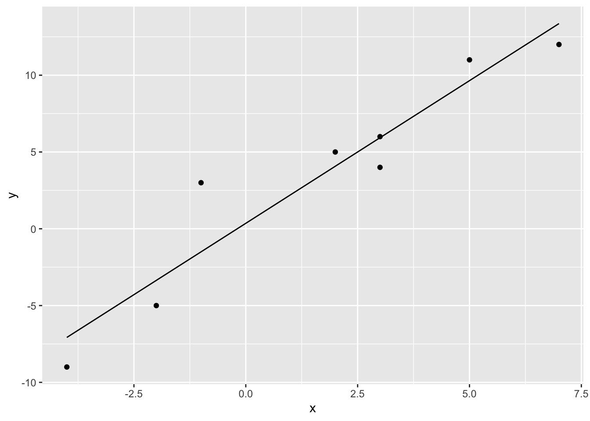
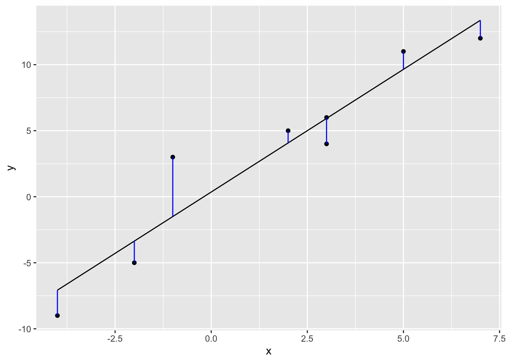

Chapter 23 Inner product, length, and orthogonality
Definition 23.1 Let \(\mathbf{u}\) and \(\mathbf{v}\) be vectors in \(\mathcal{R}^n\). Then, the inner product of \(\mathbf{u}\) and \(\mathbf{v}\) is \(\mathbf{u}' \mathbf{v}\). The vectors \(\mathbf{u}\) and \(\mathbf{v}\) are \(n \times 1\) matrices where \(\mathbf{u}'\) is a \(1 \times n\) matrix and the inner product \(\mathbf{u}' \mathbf{v}\) is a scalar (\(1 \times 1\) matrix). The inner product is also sometimes called the dot product and written as \(\mathbf{u} \cdot \mathbf{v}\).
If the vectors \[ \begin{aligned} \mathbf{u} = \begin{pmatrix} u_1 \\ u_2 \\ \vdots \\ u_n \end{pmatrix} & & \mathbf{v} = \begin{pmatrix} v_1 \\ v_2 \\ \vdots \\ v_n \end{pmatrix} \end{aligned} \] then \(\mathbf{u}' \mathbf{v} = u_1 v_1 + u_2 v_2 + \cdots u_n v_n\)
Example 23.1 Find the inner product \(\mathbf{u}'\mathbf{v}\) and \(\mathbf{v}'\mathbf{u}\) of \[ \begin{aligned} \mathbf{u} = \begin{pmatrix} 2 \\ -3 \\ 1 \end{pmatrix} & & \mathbf{v} = \begin{pmatrix} 4 \\ -2 \\ 3 \end{pmatrix} \end{aligned} \]
- do by hand
## [1] 17## [,1]
## [1,] 17## [1] 17## [,1]
## [1,] 17The properties of inner products are defined with the following theorem.
Theorem 23.1 Let \(\mathbf{u}\), \(\mathbf{v}\), and \(\mathbf{w}\) be vectors in \(\mathcal{R}^n\) and let \(c\) be a scalar. Then
\(\mathbf{u}'\mathbf{v} = \mathbf{v}'\mathbf{u}\)
\((\mathbf{u} + \mathbf{v})' \mathbf{w} = \mathbf{u}' \mathbf{w} + \mathbf{v}' \mathbf{w}\)
\(( c \mathbf{u} )' \mathbf{v} = c ( \mathbf{v}'\mathbf{u} )\)
\(\mathbf{u}'\mathbf{u} \geq 0\) with \(\mathbf{u}'\mathbf{u} = 0\) only when \(\mathbf{u} = \mathbf{0}\)
Based on the theorem above, the inner product of a vector with itself (\(\mathbf{u}'\mathbf{u}\)) is strictly non-negative. Thus, we can define the length of the vector \(\mathbf{u}\) (also called the norm of the vector \(\mathbf{u}\)).
Definition 23.2 The length of a vector \(\mathbf{v} \in \mathcal{R}^n\), also called the vector norm \(\| \mathbf{v} \|\) is defined as \[ \begin{aligned} \| \mathbf{v} \| & = \sqrt{\mathbf{v}'\mathbf{v}} = \sqrt{v_1^2 + v_2^2 + \cdots + v_n^2} \end{aligned} \]
Example 23.2 Let \(\mathbf{v} = \begin{pmatrix} a \\ b \end{pmatrix} \in \mathcal{R}^2\). Show that the definition of the norm satisfies the Pythagorean theorem.
Another property of the norm is how the norm changes based on scalar multiplication. Let \(\mathbf{v} \in \mathcal{R}^n\) be a vector and let \(c\) be a scalar. Then \(\|c \mathbf{v}\| = |c|\|\mathbf{v}\|\)
Definition 23.3 A vector \(\mathbf{v} \in \mathcal{R}^n\) whose length/norm is 1 is called a unit vector. Any vector can be made into a unit vector through normalization by multiplying the vector \(\mathbf{v}\) by \(\frac{1}{\|\mathbf{v}\|}\) to get a unit vector \(\mathbf{u} = \frac{\mathbf{v}}{\|\mathbf{v}\|}\) in the same direction as \(\mathbf{v}\).
23.1 Distance
In two dimensions, the Euclidean distance between the points \((x_1, y_1)\) and \((x_2, y_2)\) is defined as \(\sqrt{(x_1 - x_2)^2 + (y_1 - y_2)^2}\). In higher dimensions, a similar definition holds.
Definition 23.4 Let \(\mathbf{u}\) and \(\mathbf{v}\) be vectors in \(\mathcal{R}^n\). Then the distance \(dist(\mathbf{u}, \mathbf{v})\) between \(\mathbf{u}\) and \(\mathbf{v}\) is
\[ \begin{aligned} dist(\mathbf{u}, \mathbf{v}) = \|\mathbf{u} - \mathbf{v}\| \end{aligned} \]
23.2 Orthogonal vectors
The equivalent of perpendicular lines in \(\mathcal{R}^n\) are known as orthogonal vectors.
Definition 23.5 The two vectors \(\mathbf{u}\) and \(\mathbf{v}\) in \(\mathcal{R}^n\) are orthogonal if \[ \begin{aligned} \mathbf{u}' \mathbf{v} = 0 \end{aligned} \]
23.3 Angles between vectors
Let \(\mathbf{u}\) and \(\mathbf{v}\) be vectors \(\mathcal{R}^n\). Then, the angle between the vectors \(\mathbf{u}\) and \(\mathbf{v}\) is defined as the angle \(\theta\) in the relationship
\[
\begin{aligned}
\mathbf{u}' \mathbf{v} = \| \mathbf{u} \| \| \mathbf{v} \| cos(\theta)
\end{aligned}
\]
Solving for the angle \(\theta\) results in the equation
\[
\begin{aligned}
\theta = arccos \left( \frac{\mathbf{u}' \mathbf{v}}{\| \mathbf{u} \| \| \mathbf{v} \|} \right)
\end{aligned}
\]
where \(arccos(\cdot)\) is inverse cosine function, which is acos() in R.
see example: angles-as-n-gets-large.R
Example 23.4 Let \(\mathbf{u} = \begin{pmatrix} 1 \\ 4 \\ 6 \end{pmatrix}\) and \(\mathbf{v} = \begin{pmatrix} -5 \\ 2 \\ 4 \end{pmatrix}\). What is the angle between these two vectors?
Solution. The angle between the vectors \(\mathbf{u}\) and \(\mathbf{v}\) depends on the dot product between the two vectors and the norms (lengths) of the two vectors. The inner product of \(\mathbf{u}\) and \(\mathbf{v}\) is \[ \begin{aligned} \mathbf{u}'\mathbf{v} = \begin{pmatrix} 1 & 4 & 6 \end{pmatrix} \begin{pmatrix} -5 \\ 2 \\ 4 \end{pmatrix} = 1*-5 +4*2 + 6*4 = 27 \end{aligned} \] where the vector \(\mathbf{u}\) has length \[ \|\mathbf{u}\| = \sqrt{u_1^2 + u_2^2 + u_3^2} = \sqrt{1^2 + 4^2 + 6^2} = \sqrt{53} = 7.2801099 \] and the vector \(\mathbf{v}\) has length \[ \|\mathbf{v}\| = \sqrt{v_1^2 + v_2^2 + v_3^2} = \sqrt{-5^2 + 2^2 + 4^2} = \sqrt{45} = 6.7082039 \] Plugging these into the equation for the angle \(\theta\) gives \[ \begin{aligned} \theta = arccos \left( \frac{\mathbf{u}' \mathbf{v}}{\| \mathbf{u} \| \| \mathbf{v} \|} \right) \\ = arccos \left( \frac{27}{ 7.2801099 * 6.7082039} \right) \\ = 0.984997 \end{aligned} \] which gives an angle of \(\theta\) = 0.984997 radians between the vector \(\mathbf{u}\) and \(\mathbf{v}\). In degrees, this angle is \(\theta\) = 0.984997 * \(\frac{180}{\pi}\) = 56.4361716 degrees.
In R, this angle can be found by finding the dot product of \(\mathbf{u}\) and \(\mathbf{v}\)
## [1] 27as well as the lengths of these two vectors
## [1] 7.28011## [1] 6.708204Combining these, the angle \(\theta\) can be calculate in radians as
## [1] 0.984997and in degrees this is
## [1] 56.4361723.4 Orthogonal sets
The set of vectors \(\mathcal{S} = \{ \mathbf{v}_1, \ldots, \mathbf{v}_p \}\) in \(\mathcal{R}^n\) is said to be an orthogonal set if every pair of vectors is orthogonal. In other words, for all \(i \neq j\), \(\mathbf{v}_i' \mathbf{v}_j = 0\). The set is called an orthonormal set if the set of vectors are orthogonal and for \(i = 1, \ldots, p\), each vector \(\mathbf{v}_i\) in the set has length \(\| \mathbf{v}_i \| = 1\).
Example 23.5 Show the set of vectors \(\left\{ \mathbf{v}_1 = \begin{pmatrix} 3 \\ 1 \\ 1 \end{pmatrix}, \mathbf{v}_2 = \begin{pmatrix} -\frac{1}{2} \\ -2 \\ \frac{7}{2} \end{pmatrix}, \mathbf{v}_3 = \begin{pmatrix} -1 \\ 2 \\ 1 \end{pmatrix} \right\}\) is orthogonal
- Show these are orthogonal using
R
If the set of vectors \(\{ \mathbf{v}_1, \ldots, \mathbf{v}_p \}\) are an orthogonal set, then the set of vectors \(\left\{ \frac{\mathbf{v}_1}{\|\mathbf{v}_1\|}, \ldots, \frac{\mathbf{v}_p}{\|\mathbf{v}_p\|} \right\}\) is an orthonormal set. Note that for each \(i\), the length of the vector \(\frac{\mathbf{v}_i} {\|\mathbf{v}_i \|} = 1\)
Theorem 23.2 Let the set \(\mathcal{S} = \{ \mathbf{v}_1, \ldots, \mathbf{v}_p \}\) be an orthogonal set of nonzero vectors in \(\mathcal{R}^n\). Then, the set of vectors in \(\mathcal{S}\) are linearly independent and therefore are a basis for the space spanned by \(\mathcal{S}\).
Proof. Assume the set of vectors \(\mathbf{v}_1, \ldots, \mathbf{v}_p\) are linearly dependent. Then, there exist coefficients \(c_1, \ldots, c_p\) such that \[ \begin{aligned} \mathbf{0} & = c_1 \mathbf{v}_1 + c_2 \mathbf{v}_2 + \cdots + c_p \mathbf{v}_p \end{aligned} \] Then, multiplying both equations on the left by \(\mathbf{v}_1'\) gives \[ \begin{aligned} 0 = \mathbf{v}_1' \mathbf{0} & = \mathbf{v}_1' (c_1 \mathbf{v}_1 + c_2 \mathbf{v}_2 + \cdots + c_p \mathbf{v}_p) \\ & = c_1 \mathbf{v}_1' \mathbf{v}_1 + c_2 \mathbf{v}_1' \mathbf{v}_2 + \cdots + c_p \mathbf{v}_1' \mathbf{v}_p \\ & = c_1 \mathbf{v}_1' \mathbf{v}_1 + c_2 0 + \cdots + c_p 0 \\ & = c_1 \mathbf{v}_1' \mathbf{v}_1 \end{aligned} \] which is only equal to 0 when \(c_1\) is equal to 0 because \(\mathbf{v}_1\) is a nonzero vector. The above left multiplication could be repeated for each vector \(\mathbf{v}_i\) which gives all \(c_i\) must equal 0. As the only solution to the starting equation has all 0 coefficients, the set of vectors \(\mathcal{S}\) must be linearly independent.
A set of orthogonal vectors is called an orthogonal basis.
Theorem 23.3 Let \(\{ \mathbf{v}_1, \ldots, \mathbf{v}_p \}\) be an orthogonal basis of the subspace \(\mathcal{W}\) of \(\mathcal{R}^n\). Then for each \(\mathbf{x} \in \mathcal{W}\), the coefficients for the linear combination of basis vectors \(\{ \mathbf{v}_1, \ldots, \mathbf{v}_p \}\) for the vector \(\mathbf{x}\) are
\[ \begin{aligned} \mathbf{x} & = \frac{\mathbf{x}'\mathbf{v}_1}{\mathbf{v}_1'\mathbf{v}_1} \mathbf{v}_1 + \frac{\mathbf{x}'\mathbf{v}_2}{\mathbf{v}_2'\mathbf{v}_2} \mathbf{v}_2 + \cdots + \frac{\mathbf{x}'\mathbf{v}_p}{\mathbf{v}_p'\mathbf{v}_p} \mathbf{v}_p \\ & = c_1 \mathbf{v}_1 + c_2 \mathbf{v}_2 + \cdots + c_p \mathbf{v}_p \\ \end{aligned} \] where \(c_j = \frac{\mathbf{x}'\mathbf{v}_j}{\mathbf{v}_j'\mathbf{v}_j}\). In other words, the coordinates of the vector \(\mathbf{x}\) with respect to the orthogonal basis \(\{ \mathbf{v}_1, \ldots, \mathbf{v}_p \}\) are the linear projection of the vector \(\mathbf{x}\) on the respective vectors \(\mathbf{v}_j\).
Proof. The orthogonality of the basis \(\{ \mathbf{v}_1, \ldots, \mathbf{v}_p \}\) gives \[ \begin{aligned} \mathbf{x}'\mathbf{v}_j & = \left(c_1 \mathbf{v}_1 + c_2 \mathbf{v}_2 + \cdots + c_p \mathbf{v}_p \right)' \mathbf{v}_j \\ & = c_j \mathbf{v}_j' \mathbf{v}_j \end{aligned} \] Because we know that \(\mathbf{v}_j'\mathbf{v}_j\) is not zero (a vector can’t be orthogonal to itself), we can divide the above equality by \(\mathbf{v}_j' \mathbf{v}_j\) and solve for \(c_j = \frac{\mathbf{x}'\mathbf{v}_j}{\mathbf{v}_j'\mathbf{v}_j}\)
Thus, for a vector \(\mathbf{x}\) in the standard basis, the coordinates of \(\mathbf{x}\) with respect to an orthogonal basis can be easily calculated using dot products (rather than matrix inverses) which is an easier computation.
In fact, this is exactly the idea of using least squares estimation (linear regression, spline regression, etc.).
23.5 Orthogonal projections
Definition 23.6 Let \(\mathbf{x}\) be a vector in \(\mathcal{R}^n\) and let \(\mathcal{W}\) be a subspace of \(\mathcal{R}^n\). Then the vector \(\mathbf{x}\) can be written as the orthogonal decomposition \[ \begin{aligned} \mathbf{x} = \mathbf{x}_{\mathcal{W}} + \mathbf{x}_{\mathcal{W}^\perp} \end{aligned} \] where \(\mathbf{x}_{\mathcal{W}}\) is the vector in \(\mathcal{W}\) that is closest to \(\mathbf{x}\) and is called the orthogonal projection of \(\mathbf{x}\) onto \(\mathcal{W}\) and \(\mathbf{x}_{\mathcal{W}^\perp}\) is the orthogonal projection of \(\mathbf{x}\) onto \(\mathcal{W}^{\perp}\), the subspace \(\mathcal{W}^\perp\) of \(\mathcal{R}^n\) that is complementary to \(\mathcal{W}\) and is called the orthogonal complement.
Draw picture in class - W is a plane, orthogonal projection of a vector onto the plane
This leads to the projection theorem that decomposes a vector \(\mathbf{x} \in \mathcal{R}^n\) into components that are
Theorem 23.4 Let \(\{ \mathbf{v}_1, \ldots, \mathbf{v}_p \}\) be an orthogonal basis of the subspace \(\mathcal{W}\) of \(\mathcal{R}^n\). Then for each \(\mathbf{x} \in \mathcal{R}^n\), the orthogonal projection of \(\mathbf{x}\) onto \(\mathcal{W}\) is given by \[ \begin{aligned} \mathbf{x}_{\mathcal{W}} & = \frac{\mathbf{x}'\mathbf{v}_1}{\mathbf{v}_1'\mathbf{v}_1} \mathbf{v}_1 + \frac{\mathbf{x}'\mathbf{v}_2}{\mathbf{v}_2'\mathbf{v}_2} \mathbf{v}_2 + \cdots + \frac{\mathbf{x}'\mathbf{v}_p}{\mathbf{v}_p'\mathbf{v}_p} \mathbf{v}_p \\ & = c_1 \mathbf{v}_1 + c_2 \mathbf{v}_2 + \cdots + c_p \mathbf{v}_p \\ \end{aligned} \] where the coefficient \(c_j\) corresponding to the vector \(\mathbf{v}_j\) of the linear combination of vectors \(\{ \mathbf{v}_1, \ldots, \mathbf{v}_p \}\) is given by \(c_j = \frac{\mathbf{x}'\mathbf{v}_j}{\mathbf{v}_j'\mathbf{v}_j}\). In other words, the coordinates of the vector \(\mathbf{x}\) with respect to the orthogonal basis \(\{ \mathbf{v}_1, \ldots, \mathbf{v}_p \}\) are the linear projection of the vector \(\mathbf{x}\) on the respective vectors \(\mathbf{v}_j\).
You might be wondering what use orthogonal projections are. In fact, linear regression (and most common regression models) use orthogonal projections to fit a line (or surface) of best fit. This leads to the important theorem that allows us to project a vector \(\mathbf{y} \in \mathcal{R}^n\) onto the column space of a \(n \times p\) matrix \(\mathbf{X}\) (which is exactly the linear regression of \(\mathbf{y}\) onto \(\mathbf{X}\)).
Theorem 23.5 (Orthogonal Projection Theorem) Let \(\mathbf{X}\) be a \(n \times p\) matrix, let \(\mathcal{W} =\) col(\(\mathbf{X}\)), and let \(\mathbf{y}\) be a vector in \(\mathcal{R}^n\). Then the matrix equation \[ \begin{aligned} \mathbf{X}'\mathbf{X} \boldsymbol{\beta} = \mathbf{X}' \mathbf{y} \end{aligned} \] with respect to the unknown coefficients \(\boldsymbol{\beta}\) is consistent and \(\mathbf{y}_{\mathcal{W}} = \mathbf{X}\boldsymbol{\beta}\) for any solution \(\boldsymbol{\beta}\).
Proof. Show this in class
In addition, if the columns of \(\mathbf{X}\) are linearly independent, then the coefficients \(\boldsymbol{\beta}\) are given by
\[
\begin{aligned}
\boldsymbol{\beta} = \left( \mathbf{X}'\mathbf{X} \right)^{-1} \mathbf{X}' \mathbf{y}
\end{aligned}
\]
which is the least squares solution to the linear regression problem. For example, let X and y be defined as below
Plotting this data shows the strong positive linear relationship
# The first column is a basis for a constant term (the intercept)
data.frame(x = X[, 2], y = y) %>%
ggplot(aes(x = x, y = y)) +
geom_point() We can solve for the coefficients
We can solve for the coefficients beta using the linear project theorem
and using this solution, solve for the projection \(\mathbf{y}_{\mathcal{W}}\) of \(\mathbf{y}\) onto \(\mathbf{X}\)
Plotting the projection \(\mathbf{y}_{\mathcal{W}}\) gives
# The first column is a basis for a constant term (the intercept)
data.frame(x = X[, 2], y = y, y_W = y_W) %>%
ggplot(aes(x = x, y = y)) +
geom_point() +
geom_line(aes(x = x, y = y_W)) The complement of the project (called the residuals in statistics) is given by \(\mathbf{y}_{\mathcal{W}^\perp} = \mathbf{y} - \mathbf{y}_{\mathcal{W}}\)
and can be visualized as the orthogonal projection using segments
# The first column is a basis for a constant term (the intercept)
data.frame(x = X[, 2], y = y, y_W = y_W) %>%
ggplot(aes(x = x, y = y)) +
geom_point() +
geom_line(aes(x = x, y = y_W)) +
geom_segment(aes(x = x, y = y_W, xend = x, yend = y_W + y_W_perp), color = "blue") Recall that the orthogonal projection gives the “closest” vector \(\mathbf{y}_W\) to \(\mathbf{y}\) that is in the subspace \(\mathcal{W}\) that is the span of the column space of \(\mathbf{X}\). See https://www.enchufa2.es/archives/least-squares-as-springs-the-shiny-app.html for an example.